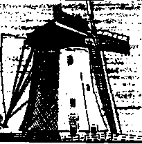
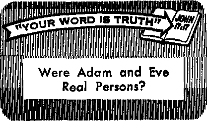

Intrepid Sea Fighters

The People at the "Peace on Earth" Assembly
Those Mysterious Cosmic Rays
Intrepid Sea Fighters
THE REASON FOR THIS MAGAZINE
News sources that are able to keep you awake to the vital issues ot our times must be unfettered by censorship and selfish interests. "Awake!” has no fetters. It recognizes facts, faces facts, is free io publish facts. It is not bound by political ties; It Is unhampered by traditional creeds. This magazine keeps itself free, that it may speak freely to you. But it does not abuse its freedom. It maintains integrity to truth.
The viewpoint of "Awake!" is not narrow, but is international. "Awake!" has its own correspondents in scores of nations. Its articles are read in many lands, in many languages, by millions of persons.
In every issue "Awake!" presents vital topics on which you should be informed. It features penetrating articles on social conditions and offers sound counsel for meeting the problems of everyday life. Current news from every continent passes in quick review. Attention is focused on activities in the fields of government and commerce about which you should know. Straightforward discussions of religious issues alert you to matters of vital concern. Customs and people in many lands, the marvels of creation, practical sciences and points of human interest are all embraced in its coverage. "Awake!” provides wholesome, instructive reading for every member of the family.
"Awake!” pledges itself to righteous principles, to exposing hidden foes and subtle dangers, to championing freedom for all, to comforting mourners and strengthening those disheartened by the failures of a delinquent world, reflecting sure hope for the establishment of God's righteous new order in this generation.
Get acquainted with "Awake!" Keep awake by reading ''Awake!’’
Published Simultaneously in the United States by the WATCHTOWER BIBLE AND TRACT SOCIETY OF NEW YORK, INC. 117 Adams Street Brooklyn, N.Y. 11201, U.S.A.
and in England by WATCH TOWER BIBLE AND TRACT SOCIETY
Watch Tower House, The Ridgeway London N.W, 7, England N. H. Knock, President Grant Suiter. Secretary
Average printing each issue; 5,650,000 54 ■ copy (Australia, 5c; Socth Africa, 3'/^)
Yearly aubscri prion rates
OlflceS fnr semimonthly editions
Canada, 160 Bddieland Ave., Toronto 390. Ont. $1 Enplind, Watch Tower House,
New Zealand, 621 New North Rd , Auckland 3
South Africa, Private Bas 2, P.O. Elandsfrmteln, Tvl. 70e
(Monthly edltlans cost half tie ab*y« rates.) Remlttajten for subwriptjons should be sent to the office In your country. Otherwise send your remittance to Brooklyn, Notice of oxpfration is eent at Irast two issues before subscription expires.
Now published in 26 languages Semimonthly—Afrikaans, Cebuano, Danish, Dutch, English, Finnish, French. German. Greek, Iloko, Italinn, Japanese, Korean, Norwegian, Portuguese, Spanish, Swedish, Tagalog Zulu.
Monthly—Chinese. Ctnyonja, Hilkaynon, Malayalam, polish, Tamil, Ukrainian.
CHANGES QF ADDRESS alfMld re»h it thirty days before yoir mwlnp date. Give is your old aid new address (If possible, yottr old address label), Write Wateh lower, Watch Tower Hirase, The Rldpeway> London N.W. 7, England.
Entered as second-class matter at Brooklyn, N.Y, Printed In England
The Bible translation reiilarly ised In "Awake!” h tho New World Translation of the Holy Serlptires, 1961 edition, When tfhir translations aro ated, this h eloarly narked.
CONTENTS
Problems That Face Sincere Catholics 5
Are You Ready to Fly in
The People at the “Peace on Earth”
Land Area
Practical Wisdom in the House
Increasing Praise in the South Pacific 26 “Your Word Is Truth”
Were Adam and Eve Real Persons? 27
Volume L
London, England, September 8, 1969
Number 17
TN March 1968, the economic system of 1 the Western world seemed on the verge of collapsing. Its underpinnings were badly shaken by the worst money crisis since 1931. Gold was being bought on the world gold markets in London, Paris and Zurich at a feverish rate because people were losing faith in the soundness of paper currencies such as the British pound and the American dollar. Gold was flowing out of the financial reserves of Western governments at a frightening pace. It was only by quick emergency measures taken by the Western governments that serious consequences were prevented.
Then in November 1968, and also in March 1969, the economic system was shaken again as speculative pressure was put on the French franc. It appeared that the franc might have to be devalued. People began selling it for gold and other currencies, putting it under severe pressure. Some persons feared that if the franc were devalued substantially, pressure would come on the British pound and then on the dollar. If they were devalued, especially the dollar, then the tottering economic system would very likely be in a state of chaos, they thought. There is a sound basis to their fears.
Money has value only as long as people have faith in the government that prints it. But if they have doubts about the government’s ability to remain economically sound or to continue existing, will they accept its money in exchange for goods and services? Not likely. There were some American tourists last year who were shocked when they had difficulty finding someone who wopld cash their traveler’s checks. This was due to distrust in the soundness of the dollar.
When you see the shakiness of the present economic system and how quickly people can lose faith in a paper currency, can you not see that there are good reasons for fearing that the economic system may collapse from its own weaknesses? But does this possibility necessarily mean it will happen? No; yet there is something coming that is certain, and it will cause all national currencies to become valueless. This is the termination of the governments on whose existence the value of such currency depends. To some persons such a thing may seem to be highly improbable, but nevertheless, it is what the Bible foretells.
Long ago Bible prophecy foretold that “the God of heaven will set up a kingdom that will never be brought to ruin. ... It will crush and put an end to all these kingdoms, and it itself will stand to times indefinite.” (Dan. 2:44) God’s Word is true; he does not lie. When this government of God brings to ruin all man-made governments, will that not mean the total collapse of the present economic system ? Will that not mean that the national currencies of those governments will become valueless? How could such currencies continue to have any purchasing power when the governments issuing them no longer exist?
Even the gold that some persons are hoarding to protect their wealth from loss because of the uncertain value of national currencies will not save them.
Under inspiration the prophet Ezekiel foretold that the riches of the people of Judah would be valueless on the day of their calamity, which came upon that kingdom in 607 B.C.E. Their gold and silver that was used as money became valueless to them as the prophet foretold. “Into the streets they will throw their very silver, and an abhorrent thing their own gold will become. Neither their silver nor their gold will be able to deliver them in the day of Jehovah’s fury.” (Ezek. 7:
<19) What was said about them can likewise be said about those today who put their trust in money, whether the money be gold and silver or paper currencies. Such money will not save them when God’s kingdom brings down in ruins the political governments of our day.
The survivors of the collapse of those governments will be the lovers of righteousness who placed their trust in God’s kingdom rather than in the political systems of the world and in the money used by those governments. Because today’s money will be valueless as a medium of exchange it should not be concluded that these survivors will be deprived or me necessities of life. As God provides now for those who trust in him and will preserve them through the end of the political governments, so he can be counted on to provide for the needs of the survivors.
At one time Jesus Christ reminded his followers that their Creator provides for the lilies and the birds and can be counted on to provide for their needs. He went on to say; “So never be anxious and say, ‘What are we to eat?’ or, ‘What are we to drink?’ or, ‘What are we to put on?’ For all these are the things the nations are eagerly pursuing. For your heavenly Father knows you need all these things. Keep on, then, seeking first the kingdom and his righteousness, and all these other things will be added to you.”—Matt. 6: 31-33.
The time for God’s kingdom to bring down the political governments in ruin and cause their economic system to crash is fast approaching. Now is the time to do as Jesus said: Seek first God’s kingdom and his righteousness. It is not the time to be seeking financial security by hoarding gold, silver, gems or even real estate. They can give you no more security than paper currencies when God’s kingdom moves against the political governments of the world and those who put their trust in them.
Heed the advice given in the Bible at 1 Timothy 6:8: “So, having sustenance and covering, we shall be content with these things.” It is better to seek spiritual riches by building up knowledge and faith in our Creator and his prophetic Word. Using these spiritual riches to help others to transform their lives for the better and to have hope can bring results that are far more rewarding and lasting than uncertain material riches.
PROBLEMS
That Face
T)ERHAPS you were brought up I as a Roman Catholic and feel that you should remain within the religion you have always considered to be the “original” Christian church. You have been taught that the pope is the God-ordained successor to the apostle Peter, and that as such he is the legitimate head of the Christian church. You felt secure inside a hierarchical system that you believed to be truly apostolic. You would never have dared to contest the spiritual authority of your priest, nor dream that the latter might someday rebel against his bishop, or that a cardinal might openly contradict the pope.
You acknowledged that the Catholic Church had its shortcomings, but you felt confident that, if reforms were necessary, they would come from the pope. You were sure he would have the active cooperation of the bishops throughout the world. Convinced that all prelates were activated by the “one Spirit” and were under oath to obey the pope, you considered yourself part of a religious organization the foundations of which go back to the apostles.—Eph. 4:4, Douay.
Your sense of logic told you that there can be only “one [Christian] faith.” (Eph. 5:5, Dy) For you the Catholic religion had preserved that faith alive throughout the centuries, since long before the Protestant Reformation. The numerous Protestant religions, all different, yet for the most part differing from the Catholic Church only on matters of church government and a few doctrines, frightened you in their conflicting diversity. This made you feel even more sure that you held to the true Church.
But since the Second Vatican Council, this feeling of security has left you. You have come to realize that, while it is true that Christ is not divided, the largest church in

Church leaders are divided. How can a Catholic determine what is right?
Christendom is far from united. —1 Cor. 1:13.
What fs the Church Teaching?
Is the Church of Rome a homogeneous system, teaching the same things everywhere? Are at least all the upper clergy in agreement among themselves as to what is required of good Catholics? If the pope is truly Peter’s successor, should not all the cardinals, bishops and priests, not to speak of all the “faithful,” submit to his authority?
You would like to be able to reply Yes to these questions, but things you have recently read in the press, heard over the radio or seen on television have set you thinking. You are beginning to realize that being a Catholic means different things in different places.
If you happened to be born in the Netherlands, very likely you would be using a catechism, approved by the Dutch bishops, containing new explanations of at least fourteen important doctrinal points, including original sin, the Redemption and transubstantiation. But these explanations are considered by Catholics in
the Vatican to be "contrary to the faith.” So Dutch Catholics are not learning the same things as Italian Catholics. Which of them are true Catholics?
Even in Italy, if you were to stop somebody in the street and ask him what his religion is, and he replied: “I am a Catholic,” you could not be sure what he really believes.
For instance, if you were in Florence, you might meet a Catholic from the Isolotto neighborhood. The parish priest there, Don Mazzi, was recently dismissed for unorthodox teaching set out in two small books that have come to be known as "the Catechism of Isolotto.” According to the French Catholic daily La Croix, this catechism was severely criticized in the Jesuit publication Civilta Cat-tolica by a church official. He deplored that "for Christians [Catholics] in Isolotto, Christ is a revolutionary who came to earth to help the poor and the oppressed.”
Yet, on the other hand, a headline in Pans-Match dated December 21, 1968, read: "10,000 Inhabitants of Florence Go to the Help of the Poor People’s Priest.” So the Italian Catholics who use this “catechism” must have quite a different conception of Christ Jesus from that of more conservative Catholics. Yet they all claim to belong to the Roman Catholic Church. Just what does it mean to be a Catholic?
Even the clergy do not agree as to what is required of good Catholics. Take Pope Paul's recent encyclical on birth control. Catholics living in different places are being required to respect quite different rules of conduct.
For example, in England Cardinal Heenan told British Catholics that couples who conscientiously decide to use the contraceptive pill should not be deprived of the sacraments. (Le Figaro, December 9, 1968) Whereas, “the Catholic episcopate of Yugoslavia has decreed strict application of the encyclical Humanae Vitae on birth control.” (Le Monde, January 19-20, 1969) Do not English and Yugoslav Catholics belong to the same church?
ARTICLES IN THE NEXT ISSUE
• When There Is Crime in Your Neighbor, hood.
• Venezuela’s Prosperous Economy.
• Preventing Aocidente to Children.
• Beauty In the Rocks.
In the American magazine Look, dated December 10, 1968, author John O’Connor commented on reaction to this encyclical, saying: "If U.S. bishops gave quick genuflection, the hierarchies of Austria, Belgium, Canada, England, France, Germany and the Netherlands emphasized the freedom of the individual conscience.” But even in the United States not all the clergy followed their bishops, as the following subheading showed: "U.S. Bishops Disciplined Priests Who Dissented, but About Half of Them Still Oppose Paul’s Teaching.”
Confirming the widespread Catholic opposition to the pope’s ruling, Life magazine wrote in an editorial; “The priests and laymen who are objecting to the encyclical—their number includes more than 400 of the leading theologians and religious educators in the U.S., and such internationally known thinkers as Germany’s Father Bernard Haring and Hans Kung of Switzerland—have couched that dissent in impassioned but respectful prose.”—August 16, 1968.
So, depending on where they live, Catholics may or may not be required to obey the pope’s encyclical that bans the use of artificial birth-control devices. It depends on the attitude of their priest or bishop. In view of this situation, can it be said that the Church of Rome is truly Christ’s catholic (universal) church, guided by the "one Spirit’’? The Catholic is supposed to look up to his priest and his bishop for spiritual guidance, but if he does so, he may find himself at odds with the pope, the head of the church.
You may reply: "This might be so, but personally I have complete confidence in the pope. He is even willing to render himself unpopular if need be in order to defend the traditional doctrines of the church.”
The tenacity of Pope Paul is not to be doubted. But is he courageously defending tenets that are based on the written “word of God,” the Holy Bible? Consider, for example, priestly celibacy.
In 1967 Paul VI issued an encyclical reaffirming the church’s position on mandatory celibacy for priests. His stand on this matter made him unpopular with priests all over the world. What was your reaction? You probably felt sorry for the priests, but agreed with the pope, thinking that he was steadfastly maintaining a rule laid down by the apostles. What are the facts?
Let us consult a standard reference work that is far from being anti-Catholic. In fact, its article on “Celibacy” was written by a Jesuit priest. We read: “The majority of scholars agree that the law of clerical celibacy was not of apostolic origin. St. Paul recommended celibacy, but he also wrote that a bishop should be a man of one wife (I Tim. iii, 2; Titus i, 6). ... The first and second ecumenical councils of the Lateran (1123 and 1139) removed the possibility of clerical marriage. .. . The great reforming council of Trent, after long discussion, retained the earlier laws, including the Lateran decree that holy orders nullify an attempt to marry.
. .. The law of Trent remained the settled legislation of the church. It was incorporated into the 1918 Codex Juris Canonici in canons 132, 987 and 1072.1'’—Encyclopaedia Britannica, 1950, Vol. 5, pp. 94-96.
So this Jesuit author admits that priestly celibacy did not become mandatory until the twelfth century, and that it is neither apostolic nor Scriptural. According to the Catholic Douay Bible, the Christian apostle Paul wrote: “Ordain priests in every city, as I also appointed thee: If any be without crime, the husband of one wife, having faithful children.” (Titus 1:5, 6) About thirty years after Christ’s death, the same apostle wrote: “It behoveth therefore a bishop to be blameless, the husband of one wife, sober, prudent, of good behaviour, chaste.”—1 Tim. 3:2, Dy.
The Douay Bible itself shows that Peter, whom the Roman Catholic Church claims to be the first pope, was married. It says: "When Jesus was come into Peter’s house, he saw his wife’s mother lying, and sick of a fever.” (Matt. 8:14) Church leaders are well aware that celibacy is not a Bible requirement. The influential Swiss Catholic theologian Hans Kung “reminds us that Peter and the apostles were married.” —Schweizerische Kirchenzeitung, 1967, No. 31.
Many leading Catholic theologians disagree with the pope on his stand on celibacy. They believe priests should be allowed to marry, even as early Christian ministers had this privilege. Their views are shared by thousands of priests throughout the world. Thus, Catholics are completely divided on this issue. As a Paris daily reported concerning Dutch Catholics: “A veritable ‘battle’ is going on in the Netherlands over priestly celibacy.” Le Monde, December 19, 1968.
So where do you stand? If you agree with the pope, you are at variance with many other Catholics and, more important still, with what your own Catholic Bible shows to be the truly apostolic position on this question.
Whatever position you adopt, you must admit that “the unity of the Church . . . founded upon the Apostolic See of Rome” does not exist. What is more, it is clear that the pope does not base decisions on God’s Word the Bible. Said Florence priest Don Mazzi: “To obey the hierarchy is to ignore the deepest needs of the poor, but to satisfy these needs is to encounter the opposition of the hierarchy. So we have to become either Pharisees or rebels. And we don’t want to become either.” (Time magazine, December 27, 1968) This dilemma faces sincere Catholics throughout the world, not only on social matters, but on vital moral and even doctrinal issues.
One of the main reasons for your being and thus far remaining a Roman Catholic is the conviction that you belonged to a united and truly apostolic church. The facts, a few of which have been here outlined, show this reason is no longer valid. But do not lose heart. True, apostolic Christianity is being practiced throughout the earth by well over a million united Christians known as Jehovah’s witnesses. Probably one of them brought you this magazine. The next time you see one of them, why not ask for help in solving the problems facing all sincere Catholics? and one of the largest of the present generation of jets. The overall length of the plane is 231 feet, and the tail reaches a height of over 63 feet—approximately the height of a six-story building. The wingspan is more than 195 feet. The cabin is 20 feet wide, more than 80 percent wider than the Boeing 707. And just how much does this behemoth weigh? Well, the gross takeoff weight is 710,000 pounds. At first sight I could not help but feel that something this large should float rather than fly-
Jumbo Jef?
A "JUMBO JET”? Yes, this is the nickname given to the new Boeing 747, but does this new plane really deserve such a nickname? A trip to the plant where it is built at Everett, Washington, soon convinces one that it is not only a jumbo but, as the Boeing people call it, “The Incredible.” Approaching the giant 747 plant, large enough itself to hold more than eight American-size football fields, I saw the number two 747 off the line gleaming under a warm sun in the blue, white and silver colors of Pan Am. This is the first 747 to bear the colors of a customer airline.
On approaching closer, I began to appreciate just how big this, giant really is. It is nearly twice as big as the Boeing 707, one of the best known
As far as speed is concerned, the 747 will be slightly faster than the present generation of jets, for it will cruise at around 625 miles per hour.
Enough for the figures. Let’s take a look inside and see what some of the special features of this great plane are. Then, we might better decide whether we want to fly in it. It has been described by its manufacturer as a plane that will end the era of the “flying tube” and begin the era of the “flying living room.” The great fuselage will be divided up into five main compartments instead of the one or two compartments found on today’s jets. Instead of one aisle down the center of the cabin, there will be two aisles extending the length of the cabin. These aisles will be intersected by five cross-aisles terminating at five double-width doors on each side of the cabin. Incidentally, these double-width doors will be over six feet high—a relief to many taller air travelers.
Another special feature of the 747 will be a lounge located behind the flight deck or cockpit. The flight deck itself will be located above the main cabin, and the pilot will be sitting 29 feet above the field. Incorporated into the flight deck are larger crew quarters as well as room for more sophisticated navigational equipment. Then directly behind the flight deck will be the first-class lounge on the upper level.
One wonders what kind of engine could ever get this huge plane off the ground. Special new turbofan engines have been developed for the 747, each developing 43,500 pounds of thrust. These engines not only are larger and more powerful but are also quieter and more efficient than today’s jet engines. To give you an idea of the size, the air intake on the front of each of these jet turbines is eight feet in diameter.
“But,” you might ask, "what do all of these special features mean for me if I am going to fly in that Jumbo Jet?” Well, the manufacturer and the airlines promise a new era of individual passenger comfort in the 747. Have you ever had that "sardine-can” feeling when flying in one of today’s jets? The promise is that in the Jumbo Jet this will all be over, even in economy class. Here the seats will be nine abreast, separated by the two aisles. But, they will be at least 10 percent wider than seats in the economy sections of current jet airliners. And have you ever been squeezed into the center seat in a three-seat unit? Well, on the 747 there will be only one set of three-seat units on one side of the aircraft. And the middle seat does not have to be sold until the airplane is 90 percent filled. The promise of more usable space certainly sounds inviting to many travelers.
There will be more room for the passenger to walk around on the 747, too, with the two aisles going the length of the cabin and then the five cross-aisles intersecting the cabin at each set of doors. These aisles and door arrangements make it possible to divide the cabin into five roomlike sections with galleys and lavatories distributed throughout the cabin. This should provide for more efficient passenger service on board.
You will note, too, that the 747 has almost vertical walls and high flat ceilings in the tourist or economy section. And here again the taller traveler wifi feel especially blessed. All of this, of course, provides a feeling of spaciousness that was not possible on earlier jetliners.
But what about first class? Well, the first-class traveler will have even greater comfort, for here one finds extra-wide seats in the forward section of the aircraft, designed for luxurious comfort. And since the flight deck is located upstairs, the first-class section goes right up to the nose of the plane, allowing some of the passengers a “pilot’s eye” view. Then there is that lounge that has been placed upstairs behind the flight deck for the convenience and relaxation of the first-class passengers. It is reached by circular stairs at the center of the first-class section. The lounge itself can accommodate around fifteen passengers in both sofa-and lounge-type seats.
Since not everyone is going to be able to get a window seat and view the terrain below, passenger entertainment became an important subject in the development of the 747. One airline has already had a new entertainment system developed that will provide ten channels of audio entertainment ranging from travel tips or lessons in French and German all the way to stereo music with Strauss waltzes or something with a more modern beat. In addition there will be six separate movie screens, enabling all passengers to have video as well as audio entertainment.
“Ah,” you say, “that all sounds very good, but I have one more question. When I get to my destination, will my suitcase be there?" This seems to be a problem that plagues many air travelers, but the 747 does promise faster baggage handling. Special containers contoured to the dimensions of the lower compartment of the aircraft have been designed so that baggage can be quickly loaded and unloaded. In fact, ft powered system for storing the baggage has been built right into the belly of the plane. So faster baggage handling is promised.
“Is it really safe?” Well, no aircraft built and flown by imperfect men is 100 percent safe. However, the 747 certainly should offer a very high degree of safety. In fact, it should be safer than today’s jet aircraft because of advanced technology. I was told that four independent hydraulic subsystems power the flight controls so that if one system fails another takes over. The huge plane is equipped with dual autopilots. And the instruments have been simplified and made larger and easier to read. Actually the 747 is considered easier to fly and to handle than the 707. After its first flight, back in February 1969, it was described by the test pilot as a “pilot's dream.”
It seems that an important by-product of the size of the 747 has been stability. The plane is described as being more stable in turbulent air and also in takeoff and landing.
The 747 is safe in other respects, too. The interior of the 747 is to have new noncombustible materials lining the cabin. And in the case of emergency, the plane can be evacuated in ninety seconds by means of slides located at each of the ten large doors.
The traveler in the 747 will also have the satisfaction of knowing that the plane will have been flight-tested for over a year before going into service. It will be checked and rechecked and, of course, will have to have the necessary certification from the United States Government before it can go into service. Out at the Boeing plant one entire 747 air frame is being subjected in ground tests to all types of loads and stresses that are greater than the plane is expected to experience in flight. These tests will continue until this airplane will eventually be a multimillion-dollar pile of junk. But by this time Boeing will know how much the aircraft can take and what it will do.
All of this may sound good to the prospective traveler in the Jumbo Jet, but certain problems are to be expected. Even though more passenger comfort is promised, the 747 will still be a crowded plane. It could carry up to 490 passengers, but most airlines will have 360 to 370 passengers.
Are the airports ready? Just this one plane, the Jumbo Jet, is going to require almost all new handling equipment, very expensive equipment that will have to be located at every airport where the 747 lands. For example, a special tow tractor had to be built for it, a tractor that weighs as much as a fully loaded DC-6 and which is powerful enough to pull three 707’s. Its cost? About $125,000. But this is only one of many new pieces of expensive equipment required to handle this huge plane.
New and larger terminals are required to accommodate the great number of passengers that will disembark when a 747 pulls into its gate. Most present-day terminals are not’ large enough for traffic right now. Of course, one argument is that air congestion will* be reduced because one 747 can carry about as many passengers as three 707’s. And while this might cut down on the number of planes arriving, still there are going to be tremendous numbers of people disembarking all at one time—a situation that cannot be ignored.
This whole project is very expensive, not only purchasing the airplane but also providing the ground equipment and the new terminals. For example, Pan American alone has committed over $180 million in ground facilities throughout the world to prepare for the 747 Jumbo Jet. And each of these Jumbo Jets will cost more than $20 million. So a tremendous outlay of funds will be required to acquire and handle the Jumbo Jet throughout the world.
Another problem may be to fill all the seats on this plane. So new lower fares have been suggested with the hope that the 747 will be able to help pay for itself. Of course, such lower fares would be welcomed by most air travelers.
tn spite of problems and price, the Jumbo Jet is selling. Major airlines have now ordered over 200 of these huge planes from Boeing, the first twenty-five of them going to Pan Am. Eventually, Boeing will be turning out a 747 every two and a half days at its plant at Everett, Washington.
But, when can you fly in it? Well, you will not have to wait long. The first 747 is scheduled to go into regular service on Pan Arn’s New York-to-London run in December 1969. So it is only a few months away. The second generation of jets is about to appear on the scene. If you are an air traveler, then in all likelihood you will be flying the Jumbo Jet by 1970. —Contributed.
Heartbeats
• When one reaches the age of seventy, his heart will have beaten, about 2,500,000,000 times.
The
at the
ASSEMBLY
HUNDREDS of thousands of persons were in attendance at the “Peace on Earth” International Assembly of Jehovah’s Witnesses this year. What a colorful picture they made as they overflowed the stadiums where they met! Their happy, radiant faces were a rainbow of delight in stark contrast to the dark gloom of this world.
But who were these people that came to the “Peace on Earth” assembly? What Magdeburg and later was a pioneer (fulltime) minister until the preaching work of Jehovah’s witnesses was banned by Hitler. He then shared in the preaching under
of
ground. During the years 1933 to 1933 he served as a traveling overseer. He was taken into custody many times by the Nazis because of his faith. In fact, he was in a concentration camp for nine years. Now he is the overseer of Jehovah’s witnesses in all of West Germany.
There were scores of others from Germany who told similar experiences a living faith. Otto Bartzsch, now at
the Society’s branch office in Wiesbaden, outlived the concentration camps of Buchenwald, Wewelsburg and Ravensbriick. Ernst Seliger spent eight years in Sachsenhausen concentration camp. Once he was buried alive. In 1924 he became a pioneer minister and today, together with his wife, is still a pioneer!
From Liberia came Dorothy Seaman and her friend Jestina Neblett. In 1963 Dorothy was one of many present at Gbarnga when the military police invaded the Christian assembly grounds and persecuted the Witnesses. That persecution motivated Jestina to become a Witness.
was their religious background before becoming Christian witnesses of Jehovah? Interviews with some of them reveal what a spiritually rich group they are, filled with the love of the God of peace, Jehovah.
At Yankee Stadium was Konrad Franke, who became a Witness in 1924. He served at the Watch Tower Society’s German branch at
Konrad Franke, seized five times by Nazi police during World War II, attended New York assembly
Now arm in arm they walked together at the “Peace on Earth” assembly in New York.
Other interesting persons at Yankee Stadium were a thirty-six-year-old Witness and his wife from Vaners-borg, Sweden. They were baptized in 1950. He was an atheist who found faith in Jehovah’s promise of a paradise earth. Nearby stood a forty-three-year-old Witness who is a French atomic scientist, but en-
gaged in its peaceful pursuits. Not far away was a doctor who practiced medicine at the University of Tokyo, Japan. He quit his practice so that he could devote more time to the preaching was a twenty-six-year-old Witness, a pianist and organist by trade, who has played for Tokyo’s main radio and television station, NHK. She was a Buddhist, but now is a pioneer minister of Jehovah’s witnesses.
Each smiling face seemed to shield a thrilling experience. The assembly stadiums were bursting with interesting persons. What a joy it would be to know them all!
Public accountant and his son help keep assembly site clean
Conventions of Jehovah’s witnesses are operated by volunteer workers. More than 17,000 were used at the assembly at Yankee Stadium. At Atlanta, Georgia, 9,455 volunteers were busy on opening day. Who are the ones that volunteered at the assemblies?
A Witness from Wisconsin was a sailor in the United States navy for twelve years. Now he owns his own refrigeration business and served at the New York assembly as captain over a couple of ice-cream stands. In the checkroom worked a mother and her three daughters; the mother was a missionary Baptist before becoming a Witness.
Volunteering at the Buffalo, New York, assembly was John Badalutz. Before learning God’s truth and during World War II he was a B-24 pilot on the Italian front in Europe. At the assembly he worked in the convention cafeteria. And helping out in the sound department was a Witness whose secular work is with a bridge division of a steel company, as a foreman.
At the Atlanta assembly also, Witnesses from every walk of life volunteered their services. A certified public accountant and his son worked in the cleaning department. A president of a chemical company helped out in the cleaning department. A watchmaker helped with fruit packing. A passenger sales representative of Sabena Belgian Airlines helped clean tables. A Witness in the Marine Contracting business helped in the tray-cleaning department.
Serving in the auditing department at Atlanta was E. Robinson, city servant for Jehovah’s witnesses in Mobile, Alabama. Witness Robinson recalled that his great-grandmother espoused the cause of peace by subscribing for the
Watchtower magazine in 1890. When her subscription expired she wished to renew it but cash was scarce. Without hesitation she sold a family
Confederate war sword for one dollar to provide the cost of her subscription. Down through the years God’s truth came to be shared with relatives. Today, Witness Robinson says, there are forty-three descendants who are now peace-pursuing witnesses of Jehovah.
Glad to serve others in the cafeteria
Seeing between 50,000 and 100,000 Christian people closely nestled together in a giant stadium can be a moving sight. At Yankee Stadium an eighty-five-year-old Witness looked up at the crowds and said: “All these people—it’s beautiful!’’ She said that she was once a Baptist, then a Methodist, then she belonged to the Church of Christ, but with Jehovah’s witnesses is “the only place where I found any rest,”
Among the great numbers of young persons present were Michael Bamsey, sixteen, and his sister Janet, seventeen, from Plymouth, England. Their father sold his insurance business because he wanted his whole family to be devoted full time in the Kingdom service. The parents are special pioneers; Janet is a pioneer and Michael planned to begin pioneering in September. The trip to New York’s “Peace on Earth" assembly was a gift from their parents.
At the Atlanta assembly was ninety-year-old R. B. Cresswell, who entered the pioneer ministry in 1927. He is still pioneering, and all these years has never missed an assembly.
Among the older assembly delegates at Buffalo was eighty-year-old Arthur Howell. He was a Methodist minister before learning God’s truth in 1924 and has spent twenty years in the pioneer ministry. Though undergoing five major operations early this year, during which he lost two-thirds of his stomach, he was here at the assembly.
Also at Buffalo’s War Memorial Stadium wqs eighty-five-year-old Katie Rett-linger. She attended the assembly surrounded by her children, grandchildren and great-grandchildren. Her face reflected her inner satisfaction. Her great-grandson, the fourth generation, was present, a nineteen-year-old youth who has been a full-time minister for the past year. Grandma Kettlinger, as she is often called, has crisscrossed the United States attending assemblies ever since her first big one at Cedar Point in 1922.
Baptism is very much a part of the assemblies of Jehovah’s witnesses. In Atlanta 1,619 persons were baptized; in Buffalo 985, and at New York 2,972 symbolized their dedication to God by water immersion, for a grand total of 5,576 for these three assemblies. Who were some of the persons baptized?
At New York's Orchard Beach the first to be baptized was a twenty-year-old social worker from Englewood, New Jersey. The first woman to be baptized was a twenty-five-year-old airline hostess from Sweden. The oldest to be baptized was eighty-five-year-old Sebastina Tropie, who was once a staunch Roman Catholic in Catania, Sicily.
A number of those baptized had unbelieving marriage mates. At Atlanta, a thirty-three-year-old mother of four was baptized despite her husband’s protest. “I may be locked out when I get home,” she said, “but I trust in Jehovah. I know what is required of me.’’ Another who was baptized despite opposition from her marriage mate was a forty-seven-year-old woman from Houston, Texas, who said: “The little Truth book brought me around.”
Baptized at Buffalo was a twenty-six-year-old youth who was formerly a member of an ultrapatriotic organization. Dissatisfied with the United Nations, he said, “The Witnesses showed me from the Scriptures that the U.N. was part of Satan’s organization, and this is what drew me to the Bible’s truth."
Also baptized at Buffalo was a forty-six-year-old man who had been both a Catholic and a Baptist minister. He had made a study of religions, trying to find the right one. After finding no satisfaction in Christian Science, he attended the Kingdom Hall of Jehovah’s Witnesses. He was greatly impressed. "What I liked the most,” he stud, "was how everything discussed harmonized with the Bible. This, at last, was what I was seeking, oh, so many years.” And now at the "Peace on Earth” assembly he heard a grand program upholding the Bible as the Word of God!
Yes, there were interesting people of all kinds. At the New York assembly one could talk to Walentina Kudriaszow, who visited relatives in Russia last year. She who once belonged to the Russian Orthodox Church was amazed at the number of people in Russia who asked her for a Bible and who wanted to know about God or Armageddon. Her companion at the assembly, Janina Riznyk, told that in 1951 the Russian police came at 2 a.m. and took her and her family along with eighty-five other families to Siberia. They were taken to a large forest where they lived on dried fish, bread and some tea. After working in the forest, they would come to their sleeping quarters where they would cut grass and wild onions and feed this to their children to keep them from starving. They prayed constantly. On the way to work they sang Kingdom songs. Soon the whole imprisoned group became Jehovah’s witnesses. Prison officials declared: “We brought these Witnesses to Siberia to exterminate them, but instead they have contaminated the whole area with their religion.”
Quite a few at the assemblies were not Witnesses but had been invited or came out of curiosity. One woman who came to Yankee Stadium said she spent all week at the stadium talking to the Witnesses. “They are truly wonderful,” she stated. "I have been so touched by the atmosphere that the Witnesses have created here that I would like to have a Bible study lesson in my home,”
Eight nuns were present for one session at Buffalo’s assembly. Two of them commented: “We came to the assembly because we’ve noticed the throngs of people passing by the convent. All week prior to the assembly the ’father’ suggested that we pray for nice weather so that you would have a nice week. And we have been doing just that.” “The most impressive part of your assembly is the great number of young people.” A Bible study, was started with some of the nuns.
Many of those at the New York assembly said they chose this assembly city because they also wanted to see the Watch Tower Society’s world headquarters. And more than 15,000 of the assembly delegates toured the Society’s Bethel home and upward of 20,000 toured the Brooklyn printing factories. An elderly Witness, after visiting the Bethel home with her husband, sat down and rubbed her feet. “It’s a long walk, isn’t it?” someone said to her.
“Yes, it is,” she replied, "but it is something I can think about and talk about for years to come!”
Were you among the happy throngs at the “Peace on Earth” assembly? Then you have your own gladsome memories of the spiritual good things learned at this assembly, as well as those of the many interesting people that you met. If you were not at the assembly, you can still meet many of these fine people at the Kingdom Hall of Jehovah’s Witnesses in your locality.
Scientists stand in awe of cosmic rays. They are by far the most powerful particles known to man. They contain millions of times more energy than any particles that man’s largest atomic accelerators can produce.
These rays, known as "primary” cosmic rays, bombard the earth’s atmosphere day and night. They collide with the atoms making up the vari
on measurements made on the flight, he said:
“The results of my observations are best explained by the assumption that a radiation of very great penetrating power enters our atmosphere from above.”
In 1925 American physicist Robert A. Millikan termed the radiation “cosmic rays” because they originated in the “cosmos,” or universe. In the decades since then, the nature of cos
ous elements of the atmosphere. This collision produces an explosive shower of “secondary” cosmic rays. It is these “secondary” rays that then speed to the earth’s surface.
The secondary cosmic rays penetrate everything, including miles of rock, even lead. In fact, right now, as you read this page, secondary cosmic rays are passing through every square inch of you at the rate of about ten a minute!
Just what are the mysterious primary cosmic rays? Where do they come from? What makes them so powerful? What effect do they have on man?
For more than half a century scientists have been probing the mysteries of cosmic rays. In 1912 the late Victor F. Hess, an Austrian physicist, flew over Europe in a balloon at altitudes up to 16,000 feet. He was seeking more information about the source of mysterious radiation detected in laboratory experiments. Based mic rays has been fairly well determined. It was discovered that most primary cosmic rays are the nuclei of atoms. These are atoms that have been stripped of their orbiting electrons. By far the most abundant are those of hydrogen, the lightest element known to man. Its nucleus contains only one proton. So the great majority of primary cosmic rays, about 90 percent, are hydrogen protons.
About 9 percent of primary cosmic rays are the nuclei of the next lightest element, helium. The remaining 1 percent are the nuclei of heavier atoms. The heavier the nuclei, the more rarely are they found as cosmic rays.
However, much of the space in the universe contains huge clouds of hydrogen gas, made up of the nuclei of hydrogen atoms. Are all of these particles cosmic rays?
No, for to be classified as a primary cosmic ray, a particle needs to be accelerated to a very high speed and energy. The clouds of hydrogen gas in the universe do
not have such speed and energy. We may illustrate this by thinking of an iron bar lying on the ground. It has potential power, but needs to be put into motion. If you pick up that iron bar and strike something, then it has great power, even smashing the object it strikes. The hydrogen nuclei in gas clouds may be compared to that. They have the potential to be primary cosmic rays, but are not unless they are accelerated to very high speeds, which would be nearly the speed of light, 186,000 miles a second!
Is there a minimum power that a particle must have to be classified as a cosmic ray? Writing in Scientific American of February 1969, V. G. Ginzburg, professor at the Institute of Physics and Technics in Moscow, stated:
“Although there is no universal agreement on the minimum kinetic energy a particle must have to be called a cosmic ray, I shall arbitrarily take this minimum to be 100 million electron volts.”
It is estimated that the average cosmic ray has an energy of about 10 billion electron volts (10 Bev). Some hit with much higher energy, up to a billion billion electron volts (1,000,000,000 Bev). And a few have been recorded that were twenty to forty times more powerful than that! How powerful is all this? Keep in mind that the average household appliance operates on just 120 volts!
For years the origin of primary cosmic rays was a matter of dispute. It still is.
Some thought they came from the sun. Others believed they came from explosions of stars (supernovae) in our Milky Way galaxy. Still others said that some originated in other galaxies. It was also suggested that cosmic radiation may be left over from the explosion of an original fireball that gave birth to the universe.
Early in the 1940’s it was noted that our sun produced relatively “mild” cosmic rays during solar flares. Solar flares result from sunspots, which may be likened to magnetic and electrical “storms” on the face of the sun. During these solar flares, huge quantities of particles, mostly hydrogen nuclei, are belched out into space. Some of these particles attain the speed and energy that put them in the category of primary cosmic rays.
However, this did not solve the problem. Why not? Because even when there were no solar flares there was still intense cosmic radiation reaching the earth.
Hence, the following conclusions were reached: (1) Solar flares are too infrequent to be the source of such a steady cosmic-ray bombardment; (2) many solar flares produce cosmic rays with energies much less than what is normally found; (3) the chemical composition of a solar cosmic-ray barrage is different, since helium is largely absent, while about 9 percent of the other cosmic rays are composed of helium. And finally, (4) cosmic rays of very high energy strike the earth’s atmosphere from all directions, not just from the sun’s direction.
For these reasons it was concluded that the sun contributes no more than a small part of the total cosmic radiation bombarding earth’s atmosphere. But then where do these other, more powerful, cosmic rays come from? While it is not definitely known, some think that most of them originate within our own galaxy, the Milky Way. Many scientists think that the sources are “exploding” stars, called supernovae. These are thought to eject the nuclei of elements, mainly hydrogen, far out into space.
However, there are scientists who feel that the heavier nuclei of some cosmic rays are so powerful that they could have escaped from other galaxies and come into ours, so the source would be outside our Milky Way. Then, as noted previously, some maintain that our galaxy may be saturated with cosmic rays as a result of the explosion of the original fireball that expanded to become the entire universe.
Whatever their origin, these particles are thought to travel a straight path through interstellar space until deflected by various magnetic fields, such as those of gas clouds. As they travel through the galaxy, they may be deflected many times, until they are traveling in an altogether different path and speed than when they started. This is given as the reason why cosmic rays from outer space strike the earth from all directions.
One thing is certain though. The primary cosmic rays that originate outside our solar system are extremely powerful. They strike the earth’s atmosphere with almost unbelievable force. How have they come by such power?
Some scientists feel that they acquire their power when they are initially ejected as bursts of particles from supernovae, exploding stars. But others feel that cosmic rays reach their speeds and power in another way.
Throughout interstellar space there exist magnetic fields and huge magnetic gas clouds. Some particles happen to fall into or near these magnetic fields and magnetic gas clouds at just the right angle. If they remain in the right direction long enough, they are pushed to higher speeds and energies. In their travels through the galaxy, these particles come into contact with still other magnetic fields and clouds and are given a further push.
We might compare this to a person kicking a ball. As it begins to roll slowly, imagine it passing by another person who also gives it a kick so that the ball rolls even faster. Repeat this until the ban reaches maximum speed. In a somewhat similar way, as the nuclei of atoms travel through space, some are caught just right by the various magnetic fields in space and are pushed faster and faster until their speed approaches that of light. Now they contain tremendous energy. They have become cosmic rays. At least this is the process that some scientists favor as the answer.
As noted earlier, cosmic rays that originate outside the solar system, and also those from the sun, are called primary cosmic rays. None of these actually strike the earth directly. In fact, many that head toward the earth never even reach it, as they are deflected away by the earth’s magnetic field.
The primary particles that are not deflected, traveling at nearly the speed of light, come only as far as the earth’s upper atmosphere. There they collide with atoms of air, such as oxygen and nitrogen.
When this collision takes place, it starts a chain reaction. The primary cosmic ray, usually a hydrogen proton, breaks apart the atom of air it strikes. This produces a shower of atomic particles. These, in turn, continue to smash into other atoms and particles. One primary cosmic ray plunging into an atom of air may thus produce a shower of millions or even billions of other high-speed particles, powerful secondary cosmic rays.
One such secondary cosmic-ray shower recorded by the Massachusetts Institute of Technology produced some ten billion secondary cosmic-ray particles! The primary ray that started the shower was said to have had an energy of between twenty and forty billion billion electron volts (20- to 40,000,000,000 Bev), a fantastic display of power! At the time, this was more than 500 million times the energy produced by the world’s most powerful atom smasher. This gigantic shower of secondary cosmic rays took place, according to scientists, in ten one-millionths of a second!
So the constant cosmic-ray shower that reaches the earth is made up of these secondary particles, the offspring of incoming primary cosmic rays. It is these secondary particles that penetrate miles of solid rock. And while the heavy condensed material known as lead can stop most other types of radiation, it cannot stop the penetration of these secondary cosmic rays.
Yet, the total energy of radiation that actually reaches the earth is only a fraction of what comes in, for even much of the secondary radiation is absorbed by the lower atmosphere.
Nevertheless, every minute of every hour, twenty-four hours a day, a rain of secondary cosmic rays passes through you and everything else on earth. What effect does this have on man?
Scientists do not have a definite answer to this question. However, since cosmic rays are a form of radiation, it has been suggested that they could cause changes in heredity. Indeed, enough of such radiation could not only damage living cells, but kill a person. However, there is not that much lethal cosmic radiation reaching the earth now.
While it is not certain what the long-range effect of cosmic radiation has been on man, it is worth noting that shortly after the flood of Noah’s day in 2370 B.C.E., man’s life-span took a dramatic drop. Before the Flood some persons lived to be over 900 years old. (Gen. 5:5, 8, 11, 14, 20, 27) Yet some 800 years after the Flood the life expectancy had been reduced to about seventy years, what it is now,—Ps. 90:10.
What does this have to do with cosmic rays? Since primary cosmic rays are stopped from reaching the earth directly by earth’s relatively thin atmosphere, it is possible that they were even more effectively absorbed before the Flood. Why so ? Because the Bible shows that there was a watery canopy high above the earth. It was this water descending that caused the Flood. (Gen. 7:11, 12; 8:2) This preFlood water canopy would probably have stopped primary cosmic rays much more effectively than now. Thus it is possible that man’s drastically shortened life-span after the Flood may be due, in part, to the more unhindered bombardment of cosmic rays on our atmosphere.
Too much exposure to cosmic radiation damages living tissue. Thus scientists are concerned when astronauts on moon flights leave the protective atmosphere of the earth. They face direct exposure, not just to secondary cosmic rays, but to the more powerful primary cosmic rays. A flight of a few days may not produce noticeable harmful effects. But a flight of weeks could be different. Any shielding in their spacecraft would not be completely effective. The strong primary cosmic rays striking the atoms in the shielding would' set off secondary cosmic-ray showers that would easily penetrate the astronauts.
In addition, a great danger in space travel comes from showers of cosmic rays that originate in solar flares. These are beyond the ability of scientists to predict. So if astronauts are outside of earth’s atmosphere and magnetic field when a sudden, giant solar flare occurs, they could be engulfed for days in a huge cosmic-ray shower.
Earth’s magnetic field deflects many primary cosmic rays so that they do not even reach the earth’s atmosphere. But scientists express great concern when they think of what would happen to life on earth if the magnetic field were not there.
Is there any danger of the earth’s magnetic field not acting as a buffer, a protection? Yes. It is generally acknowledged by scientists that the earth’s magnetic field has reversed itself many times, being weakened temporarily in the process. It is said that the magnetic field has even been turned off completely in the past! And many scientists think that a magnetic field reversal is now taking place.
What would happen if the magnetic field of earth were weakened considerably in the course of a reversal, or if it turned off altogether, even for a short time? The primary cosmic rays that are now deflected by earth’s magnetic field would strike our atmosphere directly. There would be a huge increase of cosmic radiation reaching the earth.
The larger the dose of cosmic rays, the more damaging the effects. In heavy exposure there would be very noticeable effects on the central nervous system and on the eyes. Hyperexcitability, in the last stages resembling epileptic seizures, periods of stupor and incoherence, would come first. Death would follow in a few days.
With lesser, but still lethal, radiation the effects would vary. In general there would be a loss of appetite, nausea, vomiting, followed by prostration, watery ana bloody diarrhea. A high fever would ensue. Blood-forming tissues would be affected, and in a matter of days the white cell count would decrease drastically. As a result, the body would lose its natural defenses against infection. Inflammation of the intestinal lining would occur, along with inflammation of other mucous membranes of the body. The blood would lose its ability to clot, and spontaneous external and internal bleeding would result. The body would begin to shed hair. Finally would come delirium or coma, then death.
There would be no place to go to escape these vastly increased, penetrating showers of cosmic rays if such a weakening occurred in the earth’s magnetic field. Not even the earth itself could provide a hiding place, as these particles would penetrate miles underground.
If, when bringing an end to this wicked system of things soon, as the Bible foretells, the Creator, Jehovah God, chooses to use cosmic rays as part of the destructive forces, then what? Then only the Creator could protect those living things he chooses to preserve. This he could easily do, for while cosmic rays may be largely a mystery to man, they are no mystery to their Creator, who can control them to suit his purposes.—Isa. 26:20; Zeph. 2:3; Zech. 14:12.
• Freshwater eels that live in streams of Europe and North America are snakelike fish that grow to a length of about three feet or longer. Their breeding grounds, however, are around the Bermuda Islands in the Atlantic Ocean. The adult eels swim there from their freshwater streams and lay their eggs. After the parent eels spawn, they die. At the age of one year the young American eels swim back to the streams where their parents came from, and the European eels do so after two years. But how do the young know where their parents came from? Obviously, they could not have learned this by experience, since their parents do not make the trip back with them. This knowledge was implanted in them as instinct by the All-wise Creator, Jehovah God.
By ‘‘Awake!'' ^t'etpond^i'iM tkeNeikerlands
..... - ' I " ■■ ■ - ~ '. ■ -:: --
Sr
LONG gone is that heyday of naval might when the Dutch fleets swept the oceans and challenged, singly or in combination, the fleets of England, France, Spain and Portugal. That was in the latter half of the seventeenth century. But from that time till the present, Netherlander have been continuously engrossed with another kind of sea campaign—a series of battles to preserve and extend the dry land on which they live and work and play.
How successful has this warfare proved? Well, consider a few of the astounding facts about the Netherlands, which name has the significance of “Low Countries.” Since the sixteenth century some 1,185,000 acres of dry land have been wrested from the North Sea. That is not far short of the whole area of the state of Delaware. Some 60 percent of the Dutch people live in those portions that have been reclaimed —snatched from the foaming, turbulent waters. Forty percent of the present-day land area lies below sea level, and yet produces vast quantities of grain besides nurturing millions of flowering bulbs.
Nor have the doughty Dutch called a truce in the centuries-old war. In fact, they are pushing the campaign, planning more and still more aggressive action. And well they might! Even now statistics show some nine persons for every acre— considerably denser than Britain’s 5.5 persons per acre. Not only that, but the price of idleness is too high. The sea would swiftly encroach once more and undo the labors of many generations of sea fighters. So the fight must go on. But what a wonderful thing to think that this program of land acquisition disturbs no. international boundaries, requires no military or naval activity, and yet produces such tangible, such beneficial results!
The dictionary defines a “polder” as a tract of low land reclaimed from a body of water, and the method followed by sea fighters is called “impoldering.” What does it involve? First and mainly, the dike. A dike has to be constructed all around the area to be reclaimed, and this while it is still awash with water to a considerable depth. First a bed for the dike has to be prepared by scooping off the soft layers of earth, at times to a depth of twelve yards, and often much more. Into this underwater trench sand is deposited —pumped in with a goodly proportion of water. The foundation of the dike is filled up with pure sand until about six and one-half feet below water level. At this point the surface commotion of the water demands that stronger materials be used.
Think of a continuous underwater dike of sand, fairly flat along its crest. Along both edges of the crest small dikes are then built, but these are of boulder clay. The space between these clay dikes is then filled with sand, producing a dike the main body of which is sand, but which has a hide of boulder clay exposed to the waters. Of course, that clay hide will not last long amid the chafing waters, so while the dike gradually rises other workers are preparing what we could term huge “mattresses” made of brushwood securely tied together. These are weighted with basalt blocks and sunk into position at the foot of the dike. Thus the dike is protected from the sapping power of an undertow.

Dikes con serve as highways
Next, the dike has to be protected with heavier armor above the level of the water, especially so on the seafront side. A row of piles is driven along the top edge of the mattress and these are joined by a plank wall. Straw mats are laid on the clay hide, then strewn with waste brick and stone, with finally a topping of basalt blocks. The crown of the dike is then covered with fertile clay and sown over with grass. Or, it may be that a road will be built along the top of the dike.
Land is also reclaimed by pumping dry freshwater lakes or lakes formed by peatbog excavations. The general procedure is to build a ring dike around the body of water with a canal along the outside to serve as a reservoir for excess water. Such a dike would not have to be so sturdy as that described above, since it does not have to contend with a permanent body of water on the outside, as do the seafront dikes. The next step is to pump out the water, a job formerly performed by windmill pumps, but today very efficiently achieved by high-capacity diesel or electric pumps.
Then, since evaporation is not sufficient to care for accumulation of more water by rains or by seepage, a permanent drainage system must be constructed. A dried polder is divided into parcels called fcavefe. These are marked off by ditches that do double duty as drains as well as boundaries. The ka-vels are divided into smaller parcels by secondary drainage ditches that feed into the kavel ditches. Eventually the waters find their way into the canals, which serve both as waterways as well as for directing surplus waters to the pumping installations.
What if a polder runs short of water during the dry season? Pumping installations are built so that they can pump in reverse and provide the needed moisture. As soon as the polder has been drained, the government takes the responsibility of readying the land for private cultivation —a job that is not completed for some four years. In the fall, winter cole and winter wheat a^e sown. These are harvested the following year, and then the fields are kept fallow until the sowing of the spring barley on the third year. During the fourth year oats, alfalfa and flax are sown. Then, in the fifth year, the land is released for regular use.
Disastrous flooding has struck intermittently through the years, driving lowland inhabitants to large mounds or artificial hills called terpen. There they would simply have to wait until the floodwaters were again brought under control. It became evident that the best plan was somehow to shorten the vulnerable coastline. But how? If you will take a look at an older map of the Netherlands you will note that the Zuider Zee is a shallow gulf penetrating far into the country. At low tide its depth is about fifteen feet. An eighteen-and-one-half-mile dike was projected—one that would cut off this gulf from the sea at its narrow neck between Friesland and North Holland.
Begun in 1927, this Enclosing Dike, as it is called, was completed in 1932. It is a massive structure, 330 feet thick at sea level and 500 feet at the sea base. It is equipped with outlet sluices so as to dispose of the river waters constantly draining toward the sea. Other sluices admit boats up to 2,000 tons. Thus, commerce can continue, the dangers from extensive flood disaster are lessened, while at the same time vast territories are added to the Kingdom of the Netherlands. Indeed, 312,000 acres have thus been reclaimed from the former Zuider Zee. Now under way is a 100,000-acre project, and work has also started on a 150,000-acre one. Eventually, all that will be left of the Zuider Zee will be a freshwater lake with an area of some 300,000 acres—Ijssel Lake.
The most severe flood in Dutch history struck the lands around the estuaries in the southwest in January 1953. An area of 400,000 acres was inundated. The toll of lives mounted to 1,800, A commission was formed to study the possibility of defense against future disasters on this front. The result: in 1957 a bill was passed by the government, approving what is called the Delta Plan—a project designed to shut off the estuaries from the open sea and shorten the Dutch coastline by another 420 miles.
In 1961 the estuary between North Beveland and Walcheren was closed. This opening from the North Sea, called the Veersche Gat, is one and three-quarters miles wide, and 70,000,000 metric tons of water push through it with each tide. From each headland, abutments were built out until only 1,062 feet remained to be closed. At this stage culvert caissons would be used. The caisson is a structure 148 by 67 by 67 feet, made so that it can be floated or sunk at will. The long end of the caisson is fitted with gates that can be raised or lowered. Seven of these were fitted into the final gap and sunk. Then, when the tide was most favorable, the caissons were ballasted and the gates shut. A huge volume of sand was then poured over the caisson dam, thus providing a dike that can resist the fiercest raging of the North Sea.
Meantime work began on the task of damming the Haringvliet estuary, flanked by the islands of Voome and Putten on one side and Goeree-Overflakkee on the other. Here 260,000,000 metric tons of water flow with each tide through its 4,500-yard entrance. To this volume must be added the waters of the Rhine and the Meuse at the receding tide. A dam here will have a double task: protecting the riverheads from excessive flow of seawater, and controlling the flow, distribution and storage of river water. This requires a complex of high-capacity outlet sluices, which have now been built on a foundation of 22,000 concrete piles. The complex is 1,100 yards long, with seventeen sluices, each 186 feet wide with a gate on either side each weighing 467 tons. These sluices allow passage of 4,750,000 gallons of water per second.
The damming of two other estuaries is still in the planning stage. One of them, at the Brouwershavense Gat, will require a dam three and one-half miles long. The other, across the entrance of the Eastern Scheldt, must cope with a tide that pours 1,100,000,000 metric tons of water into the estuary. As a matter of comparison, the Enclosing Dike was built across the entrance of the Zuider Zee in water averaging 16j feet, whereas the depth of the Eastern Scheldt averages 57 feet, and in places reaches 132 feet. The Enclosing Dike is 500 feet thick at the base; that across the Eastern Scheldt will have to be 3,630 feet thick.
This would be Holland without its dikes and dunes
In preparation for these larger projects two auxiliary dams are included in the overall scheme; one, already completed, known as the Greve-lingen Dam, and the other, nearing completion, between Goeree-Overflakkee and the mainland, and known as the Volkerak Dam. These are to control the flow of sea currents during the building of the larger dams.
At Grevelingen a new method of dike construction was introduced—use of an aerial cableway. This system used two carrier cables suspended between steel towers, with twelve cableway cars each hoisting a net with a capacity of ten tons of gravel or stone pier trip. It proved to be fast and efficient.
The intrepid sea fighters of the Netherlands have had to labor hard and long. There have been setbacks and anxious moments. But the overall outcome thus far has been truly fruitful of good. The two larger projects, the Delta Plan and the Zuider Zee Plan, will effect an increase of supplies of fresh water—something vitally required both for farming and for burgeoning industry. The flushing of the Zuider Zee with fresh water from the rivers over a considerable period has produced a body of fresh water. So, too, when the estuaries of the southwest are closed off another freshwater lake will result.
The Delta Plan, particularly, is making possible the construction of a greatly improved road system for the southwest. Both projects have also as an aim the fight against salification. The salt of incoming tides settles at the bottom of rivers, canals and drainage ditches, seeps into the ground and reduces the yield of grains and other crops. The large artificial freshwater reservoirs will have the effect of opposing the seepage of salt waters from the coastal region.
The overall gain may be judged by observing the accompanying map that shows in outline how much of the Netherlands would be under the sea were it not for the vast system of' dikes and dunes that stand between a large portion of her population and the endless push and tumult of the North Sea, Certainly, to the sea fighters of the Netherlands there is much better reward for their labors than the grim accomplishments of their most successful naval campaigns.
laKid AREA • The earth’s land area is estimated to be 57,900,000 square miles. Yet that is only 29.4 percent of the earth's surface area. Water predominates.
Applying practical wisdom about your home can save you a great deal of time and energy and produce better results. Shortcuts can take away some of the unpleasantness associated with certain household duties, yes, they can be made lighter and even “fun.” Listed below are a number of household hints that many housewives have found helpful.
IN THE KITCHEN
• Would you like your rice to be more fluffy? Simply add one teaspoon of lemon juice to each quart of water while cooking.
• By adding one tablespoon of cooking oil or shortening to the water in which you are going to cook macaroni, you can avoid those messy “boilovers.”
0 When poaching eggs, you can keep them together by simply adding a few drops of lemon juice or vinegar or one teaspoon of salt to the water.
• If you want to keep heated milk from scorching, rinse the pan with hot water before using it. • Grease potato skins before baking, to keep them soft.
• To make removal of the shell of a hard-boiled egg easier, add salt to the cooking water. • To save time and energy in whipping cream, add six to eight drops of lemon juice to a pint of cream. Since too much lemon sours cream, count the drops carefully.
• Do you want to keep peeled sweet potatoes and apples from turning black? Place them in salted water at once after cutting them.
• If you want to avoid crying while peeling onions, submerge them in a pot of water while you peel them.
• To make celery crisp, let it stand in cold water to which one teaspoon of sugar per quart has been added.
• Lemons keep fresh if you place them in a glass jar filled with water and covered tightly. • To keep cut fresh fruits from discoloring, just sprinkle lemon or pineapple juice over them.
• Fruit jars will open easily if you set them upside down in hot water for a few minutes.
• Cutting tomatoes in vertical slices keeps more juice in. Adding them to your salad last will prevent the dressing from being thinned out.
• To save time and the cleaning of pots when preparing food from cans, do the following: Cut off the can tops, set the cans in a pan and fill the pan with water about half the depth of the cans. Cover the pan with a lid and turn on the heat. In a short time food will be piping hot, and there will be no messy pan to clean.
• To clean your oven in a jiffy, set a pan of ammonia and water in it overnight. The next day you will be surprised at how easy the job has become.
OTHER HOUSEHOLD HINTS
• To thread a needle easily, rub the end of the thread on a cake of soap.
• To tie packages securely, wet the string before using it. As the string dries, it will shrink and thus get tighter.
• Wipe your bathroom windows and mirrors with a little glycerine and then buff them with a soft cloth. This will keep them from steaming up.
• To remove a grease spot from your upholstery, simply rub cornmeal into it and vacuum the next day.
• To keep dust from flying when you are sweeping, dampen the broom bristles and the inside of the dustpan.
• Did you know that cut flowers will last much longer if you set them in leftover tea?
• What do you do when you And the glue supply hardened? Add a few drops of vinegar' to it and it will soften up.
• If a window is constantly sticking or is difficult to open, paint the window slides with no-polishing floor wax or rub them down with the end of a candle.
• Hang moth preventatives as high as possible, because the fumes filter downward. Hanging them lower gives only partial protection.
• To remove paint odor from a newly painted room, just place a large, open pan of cold water containing a large onion cut in half in the center of it. The onion will absorb the odor within ''a few hours.
NOTEWORTHY event in the history of Jehovah’s witnesses in the South Pacific islands took place recently when the new branch office of the International Bible Students Association was dedicated at Suva, Fiji.
On Friday, May 16, 1969, 632 persons squeezed into the Kingdom Hall on the first floor of the new branch building to benefit from the dedication program. The upbuilding program and tour of the beautiful new facilities deeply impressed all visitors.
Until the middle of 1958 the Australian branch cared for the work of Jehovah's witnesses in the South Pacific. Then, on September 1, 1958, a new branch was established in the Fijian capital of Suva. A small1 place was rented and used as a branch office and missionary home for one couple.
In 1958 there were 227 Witnesses preaching the good news of God’s kingdom on just a few islands of the South Pacific. But now, eleven years later, the branch cares for the preaching work in Fiji, American Samoa, Tahiti, Western Samoa, Cook Islands, Tonga, Niue, Gilbert and Ellice Islands, New Hebrides and New Caledonia. And the 227 praisers of Jehovah God have increased to 862, of whom 396 are carrying on the preaching work in Fiji! This expansion throughout the South Pacific resulted in the need for this new branch office.
The hundreds of visitors at the dedication program were delighted with the modern facilities. Especially moved were six Witnesses who have watched the Bible educational work of Jehovah's witnesses grow in the islands from when there was just a handful of Witnesses. One of them, now eighty-three years old, was especially overjoyed by the huge crowd and the way in which Jehovah God has prospered his work.
Also, a fleshly brother and sister related how, as youngsters, they were among the nine Kingdom preachers who formed the first congregation of Jehovah’s witnesses in Fiji in 1947. Both of them became full-time ministers in 1951, and they are still serving in the full-time preaching work along with their marriage mates.
A highlight of the dedication proceedings was the tour of the building itself. It is a two-story structure with a basement. Its outside walls are rose-beige, and it has pale-gray sliding and folding wooden shutters. These can be adjusted to control the afternoon sun on the upstairs balcony of the home.
One side of the building has a specially designed brick grillwork which acts as a sunbreaker. This permits the windows of the Kingdom Hall to be left open permanently, the wide eaves above providing protection from the rain. The large vertical column houses the stairwell, and the foot-wide glass slits emit light for this stairwell.
Inside, the visitors noted the cool color scheme of the Kingdom Hall. They liked the mosaic tiling of the stairways and hall entrance and vinyl tiling on the floors. Appreciated, too, were the louvered windows down both sides of the hall to keep it cool.
Above, they inspected the office on the top story. From here the visitors moved on into the Bethel home, where two couples live. Here, too, is a tastefully furnished lounge, also a goodsized kitchen and dining room.
Many were the thanks given to Jehovah for providing these new facilities. Thanks, too, were expressed to the Witnesses in New Zealand for their loving contributions to purchase the land, and to Witnesses in Australia for their contributions for the building’s construction. How greatly the local Witnesses appreciate these fine facilities was shown when 478 attended the first regular meeting in the new Kingdom Hall which is designed to accommodate only 250 persons. Indeed, there is a great increasing of praise to Jehovah in the South Pacific.
44 A DAM and Eve, Cain and Abel are A mythical figures. Still, they have lived. They do live; they are ourselves.” So wrote clergyman Per Lonning in his book Utenfor AUfarvei (Outside the Highroad) . What this prominent religious leader in the Norwegian State Church wrote is something that many theologians and clergymen are claiming about the first man and woman mentioned in the Holy Bible.
2 Many people do not question these claims, because they think that these religious leaders should know what they are talking about. “After all,” some might say, “these men went to seminaries to study the Bible!” Nevertheless, are their assertions accurate? Why do these clergymen make these claims? Are Adam and Eve mythical figures symbolizing mankind, or were they real persons? The answers to these questions are very important because they have to do with the reliability of the Bible as the inspired Word of God. Also, they bear directly upon the matter of sin and death, and of God’s provision for human salvation.
“Where can answers to these questions be found? Why, right there in the Holy Bible! If you will turn to it you will find that Jesus Christ, the very founder of Christianity, did not think that Adam and Eve were mythical figures representing humanity. Matthew 19:4, 5 reads: "Did you not read that he who created them from the beginning made them male and female and said, ‘For this reason a man will leave his father and his mother and will stick to his wife, and the two will be one flesh’?”
4 Note that Jesus spoke these words to the Pharisees, who were “intent on tempting him.” They were trying to prove him to be a fraud and a false prophet. (Matt. 19:3) Now, would Jesus refer to a myth to correct the wrong thinking of the critically disposed enemies? Of course not! Jesus knew that Adam and Eve were real persons. His words, “Did you not read,” refer to the account in Genesis. Evidently, the Pharisees, too, accepted this account as historical and authoritative. If not, they would have disputed Jesus’ reference to it.
s Doctor Luke is a historian whose writings have been proved to be accurate even in minute details. In his biography of Jesus Christ, he wrote that he “traced all things from the start with accuracy.” (Luke 1:3) In it he outlined a genealogical record of Jesus’ line of descent. In his record this accurate historian included “Adam, the son of God.” (Luke 3:23-38) Now think, would a meticulous historian such as Luke use a mythical figure in a genealogy compiled to prove that Jesus was the true Messiah? If he did, would anyone accept that genealogical record as genuine? In fact, would anyone think that his biographical record of Jesus was factual? Hardly!
0 Consider the writings of the apostle Paul in which he mentions the first human couple several times. His references to them clearly show that he believed that they were real persons. For example, when he wrote to a presiding minister on congregational procedure he said: “I do not permit a woman to teach, or to exercise authority over a man, but to be in silence. For Adam was formed first, then Eve.” (1 Tim. 2:12, 13) If Adam and Eve were mythological characters, then Paul was nullifying his counsel! No sensible person would take seriously instruction based on ancient fanciful stories. It would be like your employer telling you to do something a certain way because the mythical characters Woden or Thor had done it that way!
' Only by accepting the fact that Adam and Eve were real persons can we clearly understand why sickness, suffering and death afflict mankind. Paul shows this at Romans 5:12, writing: “Through one man [Adam] sin entered into the world and death through sin, and thus death spread to all men because they had all sinned.”
8 If Adam and Eve were symbols of humanity as some clergymen claim, how did sin enter all humanity and then spread to all mankind? Can something that is wholly afflicted with something “spread” that affliction to itself? No! When something spreads, there has to be a starting point. So sin and death were passed on to their yet-to-be-born descendants through the misconduct of Adam and Eve, a real flesh-and-blood couple. Human sinfulness and its accompanying process of growing old and dying testify to the fact that Adam and Eve once lived.
8 Nor is the Bible account about Adam and Eve contrary to true science. Researchers have concluded that the whole human family has a common origin! Note what Prof. R. Benedict and Dr. G. Weltflsh in this connection say in their book The Races of Mankind: “The Bible story of Adam and Eve, father and mother of the whole human race, told centuries ago the same truth that science has shown today: that all the peoples of the earth are a single family and have a common origin. . . . The races of mankind are what the Bfttfe says they are—brothers."
10 Truly, we can accept without any qualms or doubts that the Biblical account in Genesis about Aaam ana jjjve is factual and authentic. Why, then, do clergymen deny it or cast doubts upon it? It is because they do not really believe the Bible nor are they teaching it. In fact, many of them deny that God will forever remove from mankind every trace of sin inherited from Adam by means of the ransom sacrifice of Jesus Christ. They have failed to tell the people that the time for God to do this is drawing very near. —Rom. 5:18, 19.
13 Today hundreds of thousands of Jehovah’s witnesses in all parts of the earth are lovingly offering to help anyone who would like to understand what the Bible teaches. Many people are inviting them into their homes to have their Bible questions answered, and this without cost to themselves. Take full advantage of their offer. In so doing you will come to appreciate more fully the accuracy of the Bible and what a marvelously happy future can be yours in a paradise without sin and death by following its principles. —Rev. 21:3, 4.
W'itnesse» Assemble in London <§> There were 492,310 persons who attended the eight “Peace on Earth” International Assemblies of Jehovah's Witnesses in the United States and Canada during July, A grand total of 12,894 persons were baptized at these assemblies in symbol of their dedication to do God's will. After these assemblies came to their close, Nathan H. Knorr, president of the Watch Tower Bible & Tract Society, and a host of other delegates boarded planes for London, England, and the European continent, there to attend yet others in the series of “Peace on Earth" assemblies. Seven charter flights left New York for Europe; five for London. These flights represented 2,400 delegates from North America. The tours department in London stated that it has met 108 flights and welcomed more than 4,000 delegates from foreign countries, many from Africa and other parts of the world. At the opening of the assembly at Wembley Stadium, London, on July 29, there were 53,065 present; and this despite torrential rain. Many were Soaked, but stayed right through, manifesting a fine spirit. Later in the week, on just one day there were 2,215 persons baptized in symbol of their dedication to Jehovah God, and this figure was said to be not far off the yearly baptism figure in Britain over recent years. A crowd of 82,416 came to hear the advertised public talk “The Approaching Peace of a Thousand Years.”
“A Massive Crisis”
<& On July 10, President Nixon said that when his administra-tion took office in January he realized that the nation had “a major problem with regard to health care; that the problem was primarily one of enough doctors, the quality of the doctors, enough hospital beds, to take care of the massive increasing demands in this field.” But, he added, “the problem is much greater than I had realized. We face a massive crisis in this area.”
Traffic Jams in the Sky
Overcrowded airports and airways are causing concern. There were 35 collisions of aircraft last year. Reportedly there have been some 4,000 cases in which planes missed each other by less than 500 feet—a situation termed “hazardous.” The Federal Aviation Administration said that it had received from pilots notifications of 2,230 near-misses. But the FAA believes that pilots fail to report a large proportion of such near-disasters. The largest number of ne ar-misses were reported around metropolitan areas. The Air Traffic Controllers Association has called airway conditions congested and unsafe.
To the Moon and Back
<§> On July 16 Astronauts Neil Armstrong, Edwin Aldrin, and Michael Collins blasted off from Cape Kennedy, Florida, on a 240,000-mile journey to the moon. The trip was smooth. On July 20 the moon craft landed safely on the Sea of Tranquility. Man’s first words from the moon were; “Houston, Tranquility base here. The Eagle has landed.” Not long thereafter Armstren® stepped on the moon, saying: “That’s one small step for ‘a’ man, one giant leap for mankind.” Aldrin then Came out of the spacecraft and the two men spent some 2 hours and 14 minutes on the moon's surface, performing the planned tests. On July 24 Apollo 11 returned to earth, splashing down safely in the Pacific Ocean about 950 miles from Hawaii. Soon thereafter the astronauts were brought aboard the carrier Hornet and greeted by President Nixon, who said: “This is the greatest week in the history of the world since the creation.” Was it really? Was it even greater than when God’s Son Jesus Christ walked on earth and when he gave his life to open the way to eternal life for all believing mankind? What did the men think of the moon? Aldrin said: It is “magnificent desolation.” For some time to come scientists will be evaluating moon stones to determine what mew of faith already know, namely, this; "In the beginning God created the heavens and the earth.” —Gen. 1:1.
Child’s Development
<$> Children mirror their surroundings. A child brought up in a sober, studious, courteous, God-fearjng family is, 99 times out of 100, going to grow up to be a sober, studious, courteous, God-fearing adult; so wrote Dr. Max Rafferty, the California Director of Education and Superintendent of Public Instruction. This is why he says that “most youthful delinquencies go back to Mom and Pop, one way or another.’’ Dr. Rafferty lists a number of points wherein parents most frequently fail; They do not know where their children are. They talk discipline but do not follow through. Too many parents set bad examples. They fail to give their children the ancient rules of morality, modesty and simple decency. And they fail to make them earn the money they receive.
Rows Across Atlantic
<$> John Fairfax for some 15 years dreamed about rowing across the Atlantic Ocean. On July 19 his dream was fulfilled. Alone this 32-year-old man in a 22-foot-long rowboat crossed the Atlantic Ocean. The voyage took him 180 days, twice the time he thought it would take. He had lost some 21 pounds. “I am fed up with rowing,’’ he said. It is not difficult to understand Why.
A “Divided Witness”
<§> The churches are presenting a "divided witness,” said Dr. Ben Mohn Herbster, the president of the United Church of Christ He said there are many small villages of 1,000 persons or less in America with seven or eight churches, “none of them strong enough to do what needs to be done.”
VD Warning
Venereal disease will become the commonest infectious disease in Britain, if immunization against measles proves as successful as expected, warned Dr. Robert S. Morton, of United Sheffield Hospitals. The provisional figure for the number of people seen for the first time in VD clinics in England and Wales during 1968 was almost 197,000, or one in every 250 of the population. This represented, he said, an increased workload of 52 percent in terms of patients since the beginning of the decade. It was pointed out that sexually transmissible diseases were becoming more prevalent every year in smaller towns and rural areas. Medical News (London), July 18, stated: “Most young women found to have gonorrhoea displayed no symptoms. As the disease became more widespread a growing number of women appeared to suffer complications with consequent inability to conceive.” Dr. Morton added that “some of our young women are, therefore, paying a high price for emancipation and sex equality. Many are unaware of the threat to their future happiness.”
When the Court Rules
<§> A published report told about an enthusiastic singer in one of the nation's churches who used to hang onto the notes after everyone else was quiet. This habit so irked some members of the congregation that they finally had him arrested on a charge of “disturbing a religious meeting.” But the judge dismissed the case, saying he had no right to interfere with the way the individual worshiped his God. However, when a man cracked pecan nuts during a church service, a court held him guilty for deliberately being noisy.
Births Down, Illegitimacy Up
< In spite of widespread use of birth-control pills and a more frank program of sex education in schools, the rate of recorded illegitimate births in Ontario, Canada, more than doubled between 1957 and 1967. In that same period the number of births dropped. The largest increase in unmarried mothers was found among women under 24. The figures, used by the Department of Social and Family Services in an analysis of population trends, show that 3.2 percent of 151,000 live births in Ontario during 1957 were illegitimate. In 1967, there were 128,000 live births, 7 percent of them illegitimate.
Crumbling Church
<$> The pope of Rome, Paul VI, lamented the difficulties faced by the Roman Catholic Church. He said that a decreasing fidelity to basic church teachings and a "diffused lack of confidence" in the pope, his aides and bishops masked grave dangers for the Catholic Church. On July 31 the , pope flew to Uganda, Africa, to reinforce the crumbling church in that continent. He in essence said that it was up to the Africans or the African hierarchy to keep the Catholic Church from disintegrating in Africa.
Reservations for Moon Trips
< “We have been accepting reservations since 1965" for moon Hights, said a Pan American spokesman. At Pan Am alone more than 30,000 have signed up for a moon flight. At present the plane fare rates averaging six cents a mile for each person, the moon trip would cost $14,000 one way.
Alcoholism Among Children
<$> The Hungarian trade paper Magyar Hirlap stated that the nation was facing a growing problem of alcoholism among its children. In the last year and a half reportedly over 4,300 children were treated at medical stations across the country for poisoning directly attributed to ovenndul^ence in alcoholic beverages.
Chilean Violence
<$> The student violence that began in Chile in April has turned out to be no child's matter. It has spread from city to city, with school strikes, protest marches, occupation of public buildings, farmland seizures and bitter street fighting with riot squads, culminating in the kidnapping and violation of a newspaper editor. The three-month violence began when the government instituted voluntary military training during school hours for 15- and 16-year-old boys. Chile has not been involved in a war with her neighbors since the War of the Pacific in 1879, some 90 years ago.
Valuable “Junk”
In an empty basement a junkman found 25 paintings in a suitcase wrapped in an old blue bedspread. At first he wanted to burn them. Then he unsuccessfully tried to sell them for $1 apiece. People told him to "get lost.” Finally he took a couple of the pictures to an art shop. Soon the police were on the scene. The paintings were part of a collection stolen from the home of one of Britain's leading art collectors. The 25 paintings were worth $720,000. The owner offered a $72,000 reward for their return.
Can India Feed Her People ?
<$> The last two years has convinced most observers in India that agriculture is making progress. These observers say that it is within the bounds of technological feasibility for India to feed her swelling population, even if it passes the one billion mark by the end of the century. India need never experience another famine, they say. The Agriculture Ministry now talks in terms of an output of 96,000,000 to 98,000,000 tons of food grains. However, the gap between promise and achievement has only begun to narrow, and the optimistic forecasts do not take into consideration the possibility of severe droughts such as India has experienced in recent years.
Race Riot in Malaysia
<$■ Chinese and Malays in Kuala Lumpur, the capital, clashed on May 14. At least 20 persons were killed and 60 injured. The crisis was triggered when the Malaysian Chinese Association announced it would not participate in the coalition cabinet of Prime Minister Abdul Rahman. This meant that there would be no Chinese in the government for the first time since the Federation of Malaysia was formed in 1963. About one-third of the population of 10,000,000 is Chinese and a little more than half is Malay.
—Impelled by Jehovah
Plants grow when the seed is planted—that is, if the soil is right and if water continues plentiful. So with advancement to Christian maturity. Do you know what is required to be qualified in God’s sight? Read the book Qualified to Be Ministers. This book will help you to a more fruitful Christian life in the ministry. It will acquaint you with many details in the operation of Jehovah’s congregation and help you to make your place secure in God’s purpose for his people. Send for your copy today. It is only 4/3 (for Australia, 50c; for South Africa, 35c).
WATCH TOWER THE RIDGEWAY LONDON N.W. 7
please send me the hardbound book of 384 pages, Qualified to Be Ministers. I am enclosing 4/3 (for Australia, 50c; for South Africa, 35c).
Street and Number
Name................................. or Route and Box ........................................................
Post Postal
Town.....................................................................................- District No, ............ County ............................................
VERY normal person desires life with good health. We i long for relief from the pain and suffering that disease I brings, and we long for some way to escape from the __I weakening effect old age has on our bodies. But throughout the recorded history of man we have been fighting a losing battle. Why? Would you like to know? And would you be encouraged to know it will not always be so? or what you must do to ensure for yourself and your family endless life in perfect health? This is not just a dream. It is God’s own promise. Read about it in your own Bible. The book The Truth That Leads to Eternal Life will show you how. Send now. Only 2/3 (for Australia, 25c; for South Africa, 18c).
WATCH TOWER
THE RIDGEWAY
LONDON N.W. 7
Please send me the 192-page hardbound book The Truth That Leads to Eternal Life. I am enclosing 2/3 (tor Australia, 25c; tor South Africa, 18c).
Street and Number Name ......... ............................................. or Route and Box ...............
Post Postal
Town .............................. District No. ............ County
In; AUSTRALIA: 11 Beresford Rd., Strathfield, N.S.W. CANADA: 150 Bridgeland Ave., Toronto H90, Ont. SOUTH AFRICA; Private Bug 2, P.O. Elandsfontein, Transvaal. UNITED STATES: 117 Adams St., Brooklyn, N.T. 11201.
32
AWAKE!